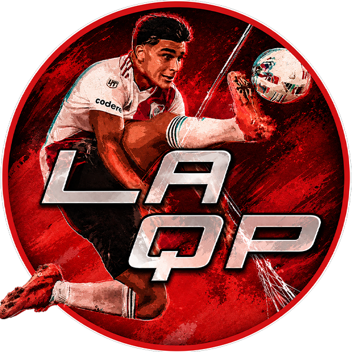
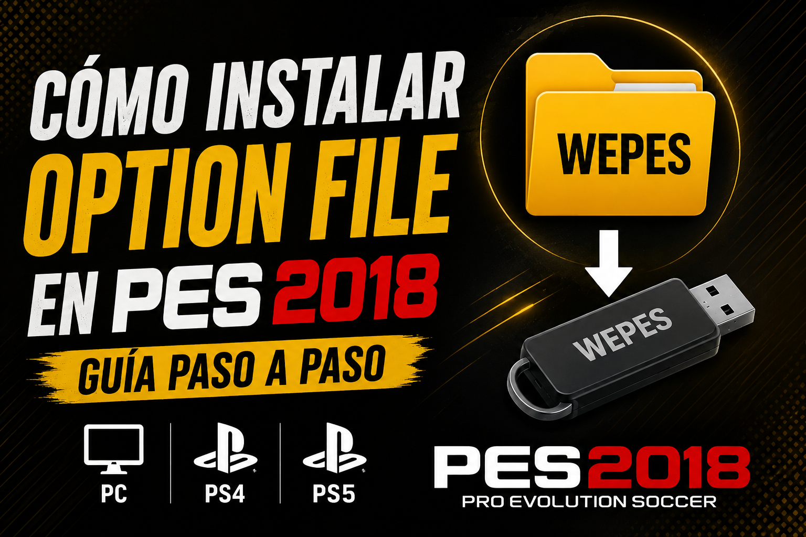
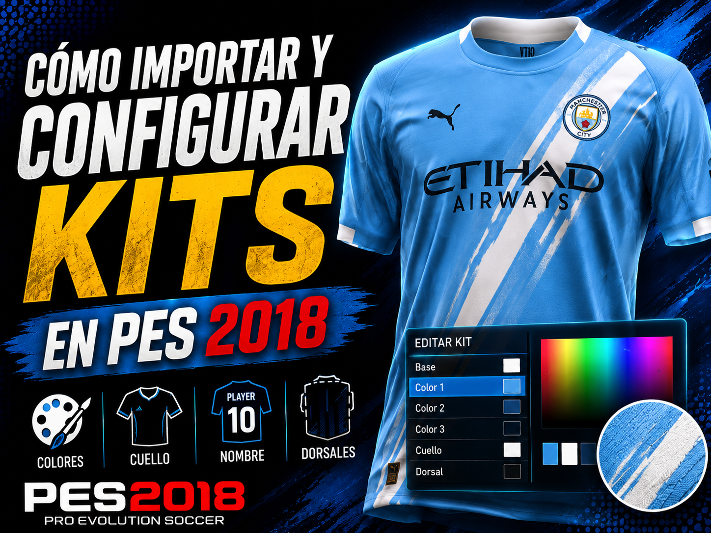
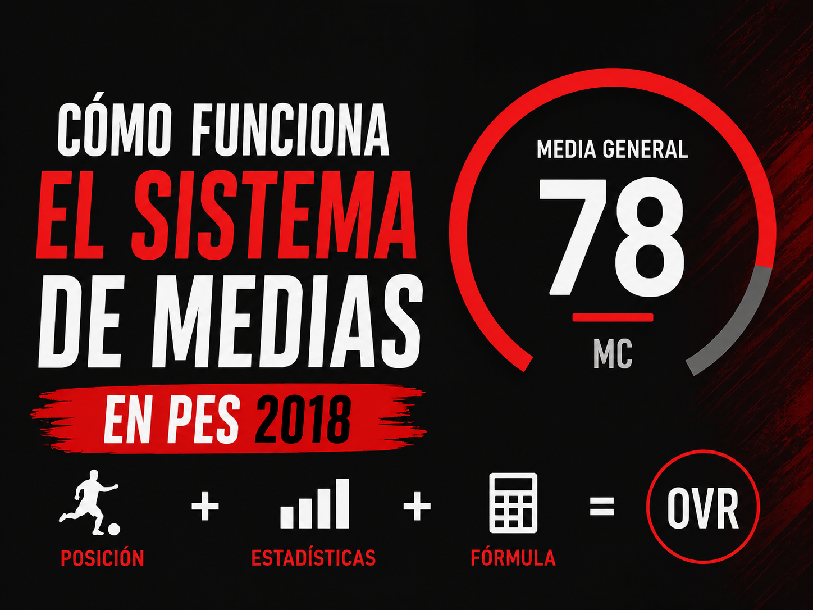

PES 2018 Option File 2026 V2V2
PES 2018
PS4 / PS5
Option File actualizado a la temporada 2026 para PES 2018. Suma Ligue 1, Serie A y 17 selecciones nuevas al contenido de la V1.

Option Files, guías, scouting y una base de datos completa para llevar tu Liga Master a otro nivel.
Las versiones principales para mantener PES 2018 actualizado en consola y PC.
Option File actualizado a la temporada 2026 para PES 2018. Suma Ligue 1, Serie A y 17 selecciones nuevas al contenido de la V1.
Option File actualizado a la temporada 2026 para PES 2018. Incluye las mismas ligas de la V1 más Ligue 1, Serie A y 17 selecciones nuevas.
Complemento para licenciar equipos que no vienen incluidos en el Option File base.
Consultá jugadores actualizados, plantillas, posiciones, medias y atributos listos para llevar al editor del juego.
Armá alineaciones con jugadores de nuestra Base de Datos, probá fichajes, creá equipos personalizados y compartí el resultado.
Filtrá la base por la necesidad de tu equipo y compará perfiles sin perderte entre miles de jugadores.
19 años · ED
22 años · MP
21 años · ED
Formaciones históricas adaptadas a las opciones reales de PES 2018.
Estimá la media aproximada de un jugador según su posición en PES 2018.
Una web hecha para actualizar, editar, entender y seguir disfrutando el juego.
Las explicaciones esenciales para instalar, editar y entender mejor el juego.

Instalación completa en PC, PS4 y PS5, desde la carpeta WEPES hasta el guardado final.
Leer guía
Colores, cuello, dorsales, nombre del jugador y detalles para un acabado profesional.
Leer guía
Entendé qué atributos pesan en cada posición y cómo editar jugadores con coherencia.
Leer guíaMejoras recientes en las herramientas y el contenido de LAQP.
Armado de equipos, fichajes personalizados y exportación visual en una interfaz renovada.
Nuevos filtros, comparaciones y datos de jugadores para encontrar perfiles más rápido.
Formaciones, instrucciones y movimientos adaptados a las opciones de PES 2018.
Tutoriales, Option Files y contenido para seguir disfrutando PES 2018.
Ver canal en YouTube